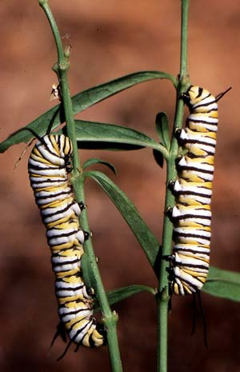
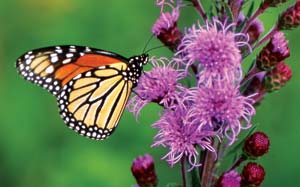

Many butterflies are beautiful, but the unique 1,500-mile migratory patterns of dazzling orange and black monarch butterflies make them one of the most well-known. Each spring, millions of adult monarchs leave the remote 60-square-mile patch of fir forest in central Mexico where they spend the winter, and race northward to lay their eggs. A smaller population overwinters in Southern California and flies north to Oregon and Montana. But with North America’s rural land being developed at the rate of 6,000 acres per day, both groups of monarchs face an increasing shortage of suitable plants upon which the caterpillars and adults can feed.
To offset this habitat loss, hundreds of gardeners, schools and even a South Dakota funeral home have set aside special patches of land in an effort to create Monarch Waystations - places where monarchs can reproduce in spring and summer, and stop for much-needed nectar breaks as they fly south in fall. Launched in May 2005, the Waystation program is sponsored by Monarch Watch, a nonprofit alliance of scientists, students and citizens based at the University of Kansas.
“People want to do something beneficial with their property,” says insect ecologist and program director Orley Taylor. Currently, more than 1,000 sites in 43 states and provinces are certified Monarch Waystations.
The minimum size for a certified Waystation is 135 square feet, in any shape - including clustered around a fence row. In addition to at least two species of milkweed (the only host plant monarch larvae eat), a Waystation should include four or more nectar-producing flowers that bloom at different times, such as purple coneflower, goldenrod and floss flower.
Common milkweed (Asclepias syriacus) can be invasive, but you won’t have this problem with swamp milkweed (A. incarnata) or bright orange butterfly weed (A. tuberosa). Swamp milkweed is available in colors ranging from deep pink to white, and monarchs often prefer it over other species. You can buy a seed and information kit for $16 from Monarch Watch, or purchase plants from a native plant nursery. Click here for a list of mail-order nurseries that sell two or more species of well-behaved milkweeds as well as other good nectar plants, organized by state.
Monarch Waystations are most needed in large cities, Taylor says. Noting that many city gardening groups are planting rain gardens to help solve runoff and water pollution problems, Taylor sees an opportunity to help monarchs at the same time. “As long as people are putting in rain gardens, they can slip a few milkweeds in.” Taylor is also working with highway departments to encourage roadside planting of milkweed and nectar plants.
Certified Monarch Waystations earn the privilege of displaying the Waystation sign, and become part of the International Monarch Waystation Registry. But anyone can help monarchs simply by planting a few milkweeds or nectar plants. You’ll be graced with these beautiful butterflies year after year.
|
 DAVID CAVAGNARO You can help monarch butterfly populations thrive by planting milkweed, the only plant the caterpillars can eat, in your back yard. |
 DAVID CAVAGNARO Meadow Blazing Star (Liatris ligulistylis) is an excellent source of nectar for adult monarch butterflies. And this hardy perennial is easy to grow almost anywhere in North America. |
|